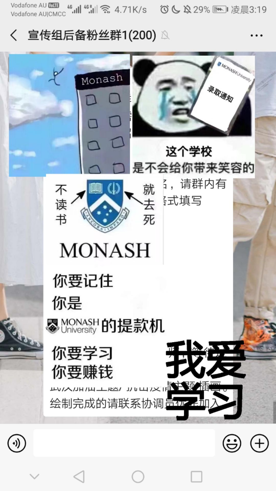

不能奔赴抗疫一线，普通人可以做什么?
原文链接 备份链接 - 疫 情 之 下 - 只有在这样的特殊时刻，我们才体会到平平常常的日子是多么美好，多么幸福…… ” 疫情爆发得如此迅猛，让所有人始料未及。 己亥年腊月二十九，公历2020年1月23日，我去单位上年前最后一天班，那时我 …
作者：北林
排版：北林
图片：北林
特别感谢：老B、小Y、老H、N、蛋仔
特殊内容：兄弟父亲为武汉医生感染逝世、姐姐感染
声明内容：本文昨日发送后因争议暂删除，现重发，内容仍未删改，由于实际完成于昨日，彼时具有强烈情绪化，望理解
“我相信现在这个时代依旧是一个厚黑的时代。那些什么公平、公义、正义，它们并不属于我们这个时代。
“我们应该学会去遵守这些规则。并利用好它。我们必须接受，存在即是合理。
“但是，小家伙，你知道什么样的人才是最可怕而伟大的吗？是那些虽然遵守着规则，但内心深处却是一个遵循伦理的道学家般的人。他们通过利用规则走到最前面，然后遵循内心引领人类走向进步。
“不过，小家伙，你一定要记住，只遵守这些规则却没有道德意识的人，他们和禽兽无异。”
——《北林散文集：我们为什么相爱》
疫情爆发前
很早就看到关于武汉出现流感的新闻。大约在十二月，这种新闻就已经被边边角角不太重视地报道。
十二月中旬，柳叶刀发布模型推演报告，由于数据过少，故而其预测被视为并不准确。
十二月末，财新网全力追踪此事，接连报道，社会关注度提高。
但直到1月23日，武汉才完全公开疫情问题。同时启动封城计划。
我的朋友圈、QQ空间这种相对隐蔽的社交关系网里的朋友们都知道我早于1月18日就开始刷屏大家朋友圈、QQ空间，以期所有人注意此事。
不解者多，且常谩骂之，戾气之重，可见传媒工作之艰难。
从传媒一线、武汉及湖北地区的朋友、同事那里获得了大量关于武汉的疫情信息。庞大的信息量让我陷入了极度的恐慌，大家知道我在恐慌什么吗？两件事，一是年前春运刚刚结束，二是所有人都不了解这件事。
我相信学社科的读者们很容易理解疫情扩散之危险，黑死病横跨三个大陆，泛滥成灾，其与蒙古帝国的高度扩张和强大的人口流动域不无关联。在一张令牌即可横行欧亚大陆的时代，能活下来的人，只能是有免疫力和抗体的人。
略微懂点人口学、病毒传播过程、历史经验和政治手段的人，都会在了解疫情情况后迅速意识到事情到底有多么严峻。尤其人传人一事到后期才被公开，这一点对我们的传媒工作打击极大。
信息无法成功传递，是由于没有官方信用背书，中小传媒企业无力扩大影响也不敢扩大，大企业更是谨小慎微。单单靠一位位传媒人在不敢发知乎、微博、头条的情况下刷刷大家的朋友圈、QQ空间、ins之类的小屏幕，根本连对自己的好友都没有说服力。
开始进入志愿者体系
一位学长向我推荐了2019-nCoV疫情地图志愿者组织，我随后又了解到了wuhan2020志愿者组织，在对两个组织作出一定的人力贡献后，A2N志愿者组织总负责人直接与我通话。之后加入部分公司协作，在进入各组织内七天后，我已基本形成了自己对当前中国各志愿者组织的总体看法。
长期从事媒体工作，人脉相对略广，这一直是我能够获得各组织重视的关键点。但我拉如此庞大的，从国家级官媒到海外各大中文媒体以及各个校园媒体，在帮他们做什么呢？目前基本上是在帮那些嗷嗷叫着要宣传的组织做组织名声宣传工作。
是的，根本没有靠谱产品情况下的宣传工作。
我要的是产品不是名声
我讲一下我的个人情况，要好的朋友的父亲，我的一位伯父，是武汉当地医生，已经离世；若亲姐弟般的姐姐从广安的家中瞒着家人报名了北大化院的病毒蛋白质断链工作，后调往武汉病毒研究所试验，立下生死状，目前已感染。亲人有负责很多一线工作的，比如有在雷神山做一些调配支援工作的，也有一线对接学生心理教育工作的。
在这种情况下我的个人压力无比巨大。
我没有参与任何一个组织的管理层，而是利用手中较多的人脉贯通各个组织。
我原本的目标是阻止疫情扩散。
我现在的目标是：
1.阻止疫情扩散；
2.阻止有人对疫情扩散起到负作用。（这句话意思是，有的人的在做的事情就是在干预他人工作，导致疫情扩散加速，比如早期的武汉市、比如红十会，就是这种角色）；
我连续接触了京东、Starup、轻芒等等公司的产品经理，他们集体不看好我对接的几个志愿者技术团队；与我交流沟通的环球时报、新华社瞭望智库、中国新闻网等官媒，也对没有产品的情况下的宣传行为抱有极大的怀疑。
甚至，部分团体参与人、部分负责人热衷于10万+的文章、官媒的采访，乃至还建立了自己的团队粉丝群。铺开推广团队，利用一切可能全力炒作团队价值，但是一款如此急需的APP的落地却需要半个月，小程序的落地根本没有出现。
E起团队、轻芒团队等轻量团队，在极短的时间内（两个小时-三到四天），便开发出了完整的求助系统。可是有的团队，根本不清楚自己到底能做出来怎样的产品，其市场价值、社会价值是否能够最大效率体现。反而是空降教授架空原团队，滚动式扩张团体极力宣传自我。
疫情当前，在我看来任何浪费人力、物力资源的行为都是叛国，在我看来任何在此种社会环境下的自我名誉追求都是发国难财的反人类罪。
我的亲朋好友冲锋陷阵，我在全力整合各个组织的资源亲自调配到最合理的需求位置，而某些团队却一边浪费各种资源，一边大肆宣传追求名利。
如果我现在和他们的负责人面对面，我会直接开骂。
“老子朋友家人都他妈死前线了，你们在这里干他娘的吸人血？？一群汉奸卖国贼！！国家白花那么多钱养你们！！”
什么产品是好产品？
A2N，一瞬间崛起的互联网NGO，十几万人协同运作，却完全基于互联网群落。
莲花会、星火社区、人员运输、物资调配、心理救助志愿者、海关协助、翻译社群、志愿者统筹人才社群等等的组织，他们在第一时间组建了基于微信群的社群，并尽一切力量接近灾区民众。
A2N等多个组织尝试打通各地资源，实现统筹调配，例如：
A乡镇与B乡镇，A乡镇物资充足，感染人极少；B乡镇物资急需，感染人众多。B镇因情况紧急上报县政府，县政府红十会等不知A镇情况，无力调配至B镇。这时候微信社群关系的浮现便能够让大家互相了解对方情况，绕开不必要的政府关系，直接尝试交流调配。
我们把这个范围急速扩大。全国县级市2862个，乡镇一级41636个，多少地区物资充足，又有哪里急需？人们会选择上报自己物资充足一事吗？上报当地政府的时候，当地政府的公信力大还是社群里哪个聊得来的伙伴公信力大？对于一个普通人，只需要一段微信语音就可以透露的真实情况，远比去政府上报很久还要付费等才能接入国家系统要来得快得多。
大量全国性平台自组织了庞大的互联网社群，我自己数了一下，在武汉疫情爆发后，我新加入社群107个，涉及几乎所有与疫情相关的直接事务。我接触了部分负责人，他们手中最终往往有上千个社群，互相交流信息，快速协同。
在我个人看来，目前最重要的事情是让疫情停下来，然后消失掉，时间是关键因素。
比起某些组织以所谓开发高新技术、开发重要社会应用产品的口号和自己一心宣传，大力追求采访而产品进展令人难以置信地觉得缓慢的糟糕境况，微信社群快速组建，极速推动信息流的方式是我所更加热衷的。
尤其是，在多个类似全国互联网社群NGO出现后，大量不必要的资源浪费被解决，大家信息逐步透明化，物资调配成功地保障了受灾地区安全，并阻止了受灾地区向其他地区加速传播的可能性。
我随后联系了京东物流产品经理，相互协调，将互联网NGO逐渐融入京东物流，从而打通快速运输通道。
我们要注意，要阻止疫情，就必须利用好时间。
现在“普通肺炎”根本不在统计数字里面，问题远比丁香园的数字要严峻很多。因而追逐时间成就变为了我的基本诉求。
但是某些个人，追求学术成就，追求个人名誉，这种卖国卖民的叛国的国难财罪，令人厌恶。
所以我更进一步地在构想，如果所有互联网NGO，尤其是各微信NGO能够统一起来，统一行动，这样做将会加速大家行动不知多少倍。令人振奋。
一个组织
我接触到的志愿者团队在体量超过150人后普遍走入组织摩擦增多的阶段，由于目前疫情特殊，过多的摩擦严重影响了效率。
有的是社会地位高低差直接影响其志愿者团队内结构，有的是创始人团队和真正的负责人团队之间的元老地位冲突，还有的是诉求不同的冲突——有的是人只想一心一意搞科研，有的人却想趁机捞一笔名声和地位的横财。
我个人更加倾向建立“民主集中制”，并只吸引真正愿意参与志愿者工作，基本上能全天为志愿者事业做出贡献的人进入，而不是招募几千人上万人然后集体赋闲。
尤其有的志愿者组织竟然建立了自己的粉丝群，简直不可理喻。

里面盖了几张图，算作对我们的母校monash的宣传了
而每个团队之间的壁垒也很成问题，各个团队招募完成后不是停止招募，而是开始建立“人才库”，各个团队把一群热心志愿工作的人当做了未来可用的人脉，库存起来。每个团队没有合理衔接，热心人才被大量浪费。
与常识不同，在我参与从武汉本地社群一直到全球志愿者组织后，我发现高学历组织对人力资源和物质资源的浪费几乎达到了极致。
技术即是权力是现代社会的标准，技术人才基本上被各个组织争抢，即使暂时用不到，但是其手中的技术却令人垂涎。必然的，许多人加入了非常多的不必要的组织，他们手中的技术在很长时间内没有人利用，从而被浪费。
尤其某些教授、负责人在此非常时期还特别注重发展私人关系，拉拢人才，尝试架空原团队以达吞并为自己成果的目的。
相反的，各种民间社群虽然时有不友好的争吵，但是所有人仍是拧成一股绳，都是为了疫情，大家把大量时间精力消耗在信息沟通上。由此达到了对疫情的直接帮助作用。这么对比，某些教授简直令人心寒。
目前各组织严重需要一个统一的“人才库”，各个组织统一调配人才，协助缓解疫情，而不是在这样的非常时期上演人才大战，争抢人力却屯而不用，这与屯口罩不一样应该判七年罚三百万吗？？？
20200202
没想到昨天就是我期盼已久的日子。但是我却提前分手了。
这一天会铭记于心，因为在这一天我得知了姐姐的状况，哭得一塌糊涂，并在了解了部分教授的恶心行为后一怒之下剃发，决心不救好中国不留发。
但是我也遇到了最要好的三个朋友，老B、小Y和老H，真的没有想到他们都在上海，集体要请我吃饭，这估计是我的20岁里，最好的礼物了。还有武汉的N，也答应了一堆武汉小吃，肯定有热干面，等这一切过去了，我一个要去的地方就是天河机场。
很开心，认识了一群特别好的，努力的，心里放得下国家、全人类乃至全宇宙的一样的人。
感恩。
2020.2.3墨尔本
长按二维码向我转账
受苹果公司新规定影响，微信 iOS 版的赞赏功能被关闭，可通过二维码转账支持公众号。
原文链接 备份链接 - 疫 情 之 下 - 只有在这样的特殊时刻，我们才体会到平平常常的日子是多么美好，多么幸福…… ” 疫情爆发得如此迅猛，让所有人始料未及。 己亥年腊月二十九，公历2020年1月23日，我去单位上年前最后一天班，那时我 …
原文链接 备份链接 非常时期，武汉成了全国人民挂念、祈福的城市。封城后，武汉人民的真实生活是什么样？ 正和岛自1月26日起特别推出《叶青：我在武汉疫区的第N天》专栏。叶青是一位定居武汉40年的市民，也是一名学者和官员。接下来的一段时间，他 …
原文链接 备份链接 非常时期，武汉成了全国人民挂念、祈福的城市。封城后，武汉人民的真实生活是什么样？ 随着疫情援助的展开，又有哪些容易忽略的问题？ 正和岛自1月26日起特别推出《叶青：我在武汉疫区的第N天》专栏。叶青是一位定居武汉40年的 …
原文链接 备份链接 今天是1月31日，月相为35%的上弦月。 It is January 31 with a 35 percent of First Quarter. 距离新月还有 9 天。 There are 9 days until …
原文链接 备份链接 【编者按】 28日，我们收到了一位名为“尘香”的读者来信，她是武汉人，退休在家，和丈夫、女儿、女婿一起留守在武汉市江汉区：截至2020年1月29日24时，武汉市累计报告新型冠状病毒感染的肺炎病例已达2261例，死 …